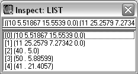

You can pass the association list in the gp_PathData variable to the gp:drawOutline function by invoking the function as follows:
(gp:drawOutline gp_PathData)
Simple enough, but you also need to figure out how to process the information stored in the association list. The Visual LISP Inspect feature can help you determine what to do.
To use the Visual LISP Inspect feature to analyze your association list
- Load the code that is in the text editor window.
-
Enter the following expression at the Console prompt:
(setq BoundaryData (gp:getPointInput))
Visual LISP will store the information you provide in a variable named BoundaryData .
- Respond to the prompts for start point, endpoint, and half-width.
- Select the BoundaryData variable name in the Console window by double-clicking it.
-
Click View
 Inspect from the Visual LISP menu.
Inspect from the Visual LISP menu.
Visual LISP displays a window like the following:
The Inspect window shows you each sublist within the BoundaryData variable.
-
Enter the following at the Visual LISP Console prompt:
(assoc 50 BoundaryData)
The assoc function returns the entry in the association list that is identified by the specified key. In this example, the specified key is 50; this is associated with the angle of the garden path (see Putting Association Lists to Use for a list of the key-value pairs defined for this application).
-
Enter the following at the Visual LISP Console prompt:
(cdr (assoc 50 BoundaryData))
The cdr function returns the second element, and any remaining elements after that, from a list. In this example, cdr retrieves the angle value, which is the second and last element in the entry returned by the assoc function.
By this point, you should have no trouble understanding the following code fragment:
(setq PathAngle (cdr (assoc 50 BoundaryData)) Width (cdr (assoc 40 BoundaryData)) HalfWidth (/ Width 2.00) StartPt (cdr (assoc 10 BoundaryData)) PathLength (cdr (assoc 41 BoundaryData))